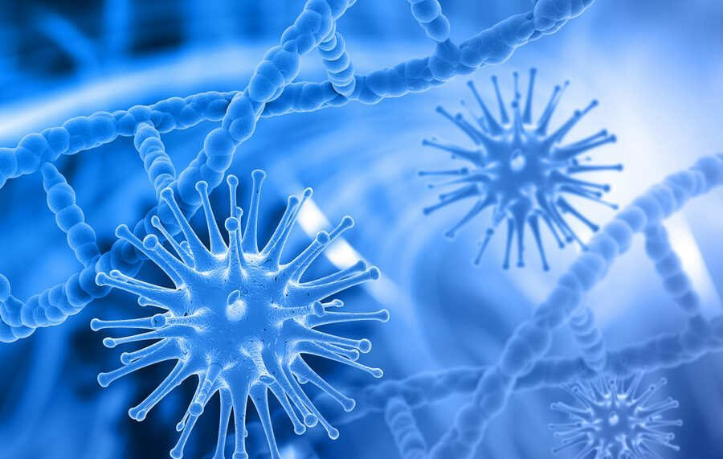

La microbiología es una de las ramas que integran la biología y se enfoca en el estudio de los microorganismos. Se dedica a su clasificación, descripción, distribución y al análisis de sus formas de vida y funcionamiento. En el caso de los microorganismos patógenos, la microbiología estudia, además, su forma de infección y los mecanismos para su eliminación. El objeto de estudio de la microbiología son aquellos organismos no perceptibles al ojo humano, por lo que un instrumento propio de esta rama de la biología es el microscopio, inventado en el siglo XVII.Entre los organismos que estudia la microbiología se encuentran los agregados celulares eucariotas y procariotas, las células, hongos, virus y bacterias y todos aquellos elementos microscópicos.
La clasificación se puede definir, como el ordenamiento de los microorganismos, en grupos taxonómicos basándose en sus semejanzas o interrelaciones que pueden tener. La microbiología se clasifica en: virus, bacterias, hongos y parásitos a continuación se dará una breve explicación acerca de estos. Virus: Son partículas infecciosas, se les considera seres no vivos, hasta que entran en contacto con la célula. Estos agentes, son entidades replicantes simples, con crecimiento intracelular obligado, esto quiere decir que dependen de componentes metabólicos y estructurales de la célula hospedera.